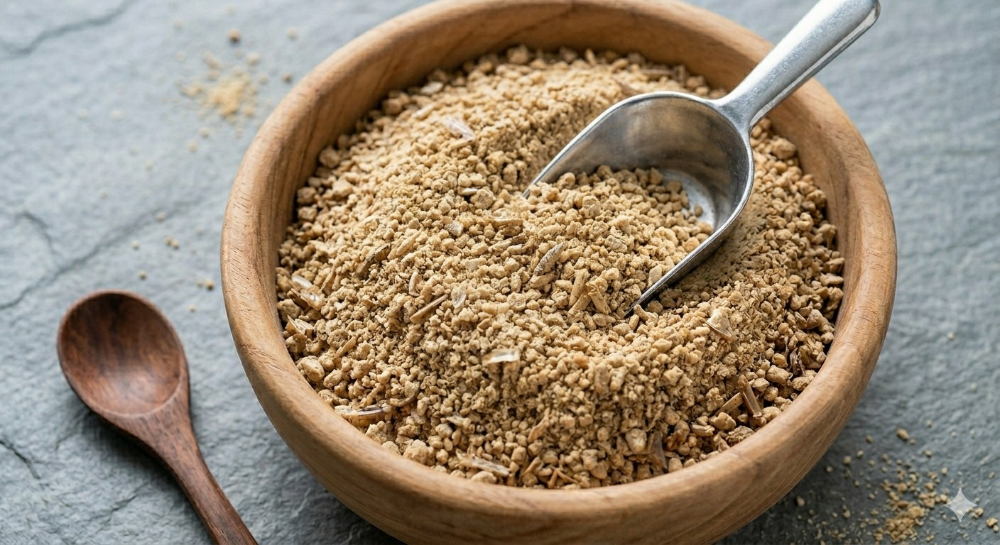
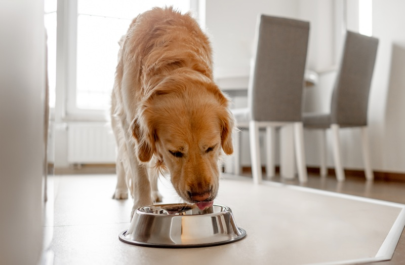
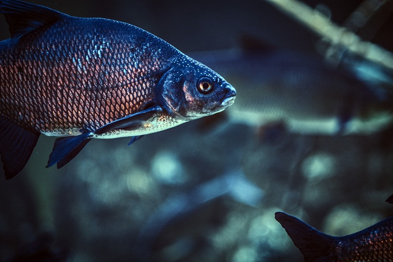
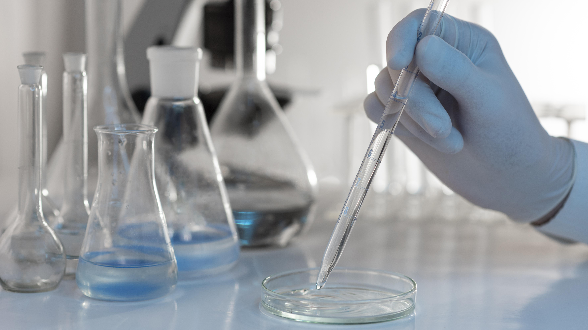

Producido en Teruel, Aragón · España
La proteína que su fórmula necesita. Con la trazabilidad que su cliente exige.
Proteína, aceite y fertilizante de Tenebrio molitor. Trazabilidad completa por lote y modelo circular verificable.

Proteína, aceite y fertilizante de Tenebrio molitor. Trazabilidad completa por lote y modelo circular verificable.
Código QR auditable en segundos. Facilita homologaciones y auditorías de proveedores.
Ver sello Tenebrio Trazado →Frass → fertilizante. Biogás → energía propia. Huella de carbono verificada, lista para CSRD.
Ver modelo circular →Trabajamos con su equipo de formulación hasta que la fórmula funcione. Sin intermediarios.
Visitar el Application Lab →
Novel protein hipoalergénica sin pescado ni soja. Digestibilidad superior al 90%, perfil aminoacídico completo, validado por la Universidad de Zaragoza y la UPV.

Novel protein hipoalergénica para dietas de eliminación. Sin pescado. Sin soja. Trazabilidad por lote.

Mejora el FCR y reduce antibióticos. La quitina activa el sistema inmune del pez de forma natural.
Colaboramos con la Universidad de Zaragoza y la UPV. Abiertos a nuevas alianzas en proteína alternativa.
"Un historial completo auditable en segundos. El proceso de homologación se simplifica enormemente."
"MolPro mejora el FCR y nos proporciona los datos de huella de carbono para nuestro informe CSRD. Todo en un mismo proveedor."
"Tres semanas en el Application Lab con nuestros formuladores. El resultado fue una fórmula adaptada y validada para nuestra línea veterinaria."
Publicamos mensualmente. Datos, fuentes y sin palabras vacías.

Muestra técnica gratuita enviada en 5 días hábiles, con ficha técnica y certificación de trazabilidad por lote.